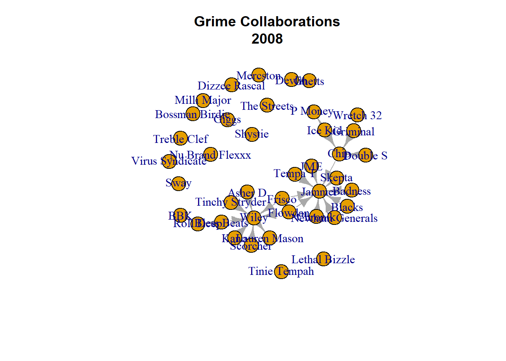

library(igraph)17 Networks of People
There are two elements to analyse networks, the nodes and the networks. In this chapter, we will cover some of the fundamental network measures. As usual, we won’t get too technical into the mathematics behind each measure, but focus on the substantive interpretations.
What is a network measure, then? Rather than describing an individual in the group, we can describe characteristics of the group itself based on the relationships that exist between the individuals in the group. Network measures focus on different elements of the network and tell slightly different stories depending on the measure. Some may indicate how interactive the group is (i.e. how much people interact) while others may indicate the extent to which ties in the group are mutual or unrequited.
There are three major uses for network measures. First, the story that these measures tell us data scientists can help us compile a story about the group we are interested in. By combining a number of these measures, we can produce a robust picture of what interaction looks like in these groups. Second, measuring the characteristics of a network can provide context for further study. For example, let’s say we are actually interested in a specific individual in a network, we may first want to understand what the whole group looks like before we measure them. Third, we may have multiple groups that we want to compare, or the same group over time. For example, let’s say we wanted to explore student connections in a classroom over time. We may collect network data at different time points in the semester. The measurements we take from those time point could help us answer how student interactions shift and change throughout the semester. Alternatively, we may wish to examine student interactions across different types of classes (i.e. large lecture vs. small seminar classes). If we collect network data across types of classes, we could compare network measurements to see if student connections are more or less dense in certain types of classes than others. Cool right?
Here, I will introduce you to some classic network measures using the 2008 Grime data that you are all familiar with now. Then, I will bring in more Grime data and demonstrate the types of stories we can tell about this group over time.
Let’s bring in our usual 2008 Grime data and then clean it up a bit (delete the selfloops).
grime_edge_list <- read.csv(file.choose(), header = TRUE)
grime_08 <- graph_from_data_frame(d= grime_edge_list, directed = TRUE)
grime_08_clean <- delete.edges(grime_08, E(grime_08)[which_loop(grime_08)])
plot(grime_08_clean, main = "Grime Collaborations\n2008")
17.1 Density
The first measurement we will cover is density. A graphs’ density relates to the number of possible ties compared to the number of observed ties. In a nutshell, it a measurement that shows the proportion of observed ties compared to the number of ties possible in the network. A fully dense network suggests that everyone who could be connected is. Meanwhile, a very sparse network suggests that very few people are connected. We use density as a measure of interactivity or connectivity in a group.
The basic maths is a ratio where: Density Ratio = observed edges / number of possible edges. Bare in mind that an undirected graph has half the number of possible ties that a directed version of the same graph has.
Density is measured from 0 to 1 and can be interpreted as the proportion of observed ties in the network compared to the total possible ties. It divides the number of observed ties by the number of possible ties in a graph. A network with a density of 1 has all possible ties while a density of 0 has none of the possible ties. Be mindful here, direction matters here. If a graph is directed then there are twice as many possible ties than in an undirected network. So, you may see a network that looks well connected but may have a low density. This may be because it is a directed network with a low reciprocity (i.e. there may not be many of the possible return ties).
dense <- edge_density(grime_08_clean)
#View it
dense[1] 0.0179487217.2 Reciprocity
Reciprocity is a measure of how balanced a network is. Another way of thinking about reciprocity is in terms of tie symmetry. It is a measure of graph symmetry or the mutual connections between individuals in the graph. In directed graphs edges between nodes are not necessarily mutual. One person may send something to another but not receive something in return. Reciprocity is a way to measure the proportion of mutual vs. unrequited connections. The most basic measure of reciprocity is the ratio. It observes the number of mutual ties (A->B, B->A) divided by the total number of edges.
The basic maths behind it is as follows: Reciprocity ratio = number of mutual dyads(observed) / Total Number of edges(possible)
This provides a scale between 0 and 1 with 1 indicating a perfectly reciprocal network. When measuring reciprocity, I always ignore loops because, in my mind, you cannot send and receive something from yourself. This, however, could be a network-specific thing. I struggle to think of any networks where loops are particularly useful.
recip <- reciprocity(grime_08_clean, ignore.loops = TRUE, mode = "ratio")
#View it
recip[1] 0.0370370417.3 Transitivity
Transitivity, also known as the clustering coefficient, is a measure of how tightly knit a network is. At its core, transitivity captures the tendency for triangles to form within a network — in other words, how likely it is that a node’s neighbors are also connected to each other. If person A is connected to both B and C, then in a highly transitive network, it is likely that B and C are also connected, forming a triangle. This reflects the idea that “a friend of a friend is also a friend.”
While density measures how connected a network is at the global level — looking at how many ties exist relative to how many could possibly exist — transitivity focuses more on local structure. It considers the relationships among a node’s immediate neighbors, revealing how clustered those connections are.
Transitivity is typically measured as the proportion of observed closed triplets (three nodes all connected to each other, forming a triangle) to the total number of connected triplets (any set of three nodes where at least two connections exist — whether or not they form a full triangle). The formula multiplies the number of triangles by three because each triangle contains three such triplets, one centered at each node.
The transitivity score ranges between 0 and 1. A score of 1 indicates that all possible triangles are present — every node’s neighbors are fully connected to one another. A score of 0 means there are no such triangles, and the network has no clustering. In this way, transitivity gives a sense of how cohesive the local connections are within the broader network.
transitivity <- transitivity(grime_08_clean)
#View it
transitivity[1] 017.4 Centraisation
The final measure I want to introduce you to is called centralisation. We have covered measures of centrality which are concerned with individuals. Measures of centralisation use similar logic but describe the graph. They capture the extent to which the network is centred around one or a few individuals. You can well imagine that a star graph (a graph where all pendula are connected to a central node) is highly centralised. Meanwhile, a full graph may be less centrlaised.
There are different measures of centralization that use nodal centrality to describe the network. For example, centralization.degree() measures the extent to which the network is centered around highly connected nodes (those with many neighbors), while centralization.betweenness() measures the extent to which the network relies on influential nodes (those that control the flow of information between other nodes).
Measures of centralisation have a range of 0- 1 (starting t see a theme here - many of these network measures are proportions). Degree centralisation score of 0 means that all the nodes have the same degree centrality (i.e. the grpah is completely uniform). A score of 1 means that one node in the network has the maximum possible degree (i.e. all others are connected to them and only them). Similar logic applies to other forms of centralisation. I will show you only degree, and betweenness but you could also try closeness and eigenvector.
These functions give you three different elements. The $res demonstrates the scores (degree, between or closeness) for each node in the network. The $centralisation item is the scaled score (the proportion). This is the one we care most about. The $theoretical_max shows the raw, unscaled, theoretical max value for the centralisation score. If you are pulling many scores together to compare them, you may want to pull out just the $centralization score.
centr_degree(grime_08_clean)$res
[1] 1 0 0 1 2 2 1 2 1 0 0 1 1 1 1 1 1 1 4 1 0 1 0 1 3
[26] 2 0 2 8 1 0 0 0 0 10 2 1 1 1 1
$centralization
[1] 0.1130835
$theoretical_max
[1] 3042centr_betw(grime_08_clean)$res
[1] 0 0 0 0 0 0 0 0 0 0 0 0 0 0 0 0 0 0 4 0 0 0 0 0 2 0 0 0 7 0 0 0 0 0 0 0 0 0
[39] 0 0
$centralization
[1] 0.004619537
$theoretical_max
[1] 57798I want you to pause for a moment and think about the network we are analysing. It has isolates. How might they be impacting these measures? You may consider removing the isolates for this type of analysis. REMEMBER, though, you MUST talk about your measurements related to what you are measuring. You can’t remove isolates and say that this group has a degree centralisation score of… which means they rely highly on one person….that would be wrong. You would have to say that you removed those without connections to obtain that score. Therefore, you’re actually talking about those with connections to others, not the whole group. You as the scientist must make the decision!
Take a look at the following once I remove the isolates.
grime_08_isol <- delete.vertices(grime_08_clean, which(degree(grime_08_clean) == 0))
centr_degree(grime_08_isol)$res
[1] 1 1 2 2 1 2 1 1 1 1 1 1 1 1 4 1 1 1 3 2 2 8 1 10 2
[26] 1 1 1 1
$centralization
[1] 0.1492347
$theoretical_max
[1] 1568centr_betw(grime_08_isol)$res
[1] 0 0 0 0 0 0 0 0 0 0 0 0 0 0 4 0 0 0 2 0 0 7 0 0 0 0 0 0 0
$centralization
[1] 0.008975813
$theoretical_max
[1] 21168The values have changed!Both have increased suggesting that the isolates were impacting the original measures. Again, your decision as to whether you keep or remove isolates.
17.5 Example
Right, let’s have some fun with this. I am going to read in some more Grime network years.
grime_2010 <- read.csv(file.choose(), header = TRUE)
grime_2012 <- read.csv(file.choose(), header = TRUE)
grime_2014 <- read.csv(file.choose(), header = TRUE)
grime_2016 <- read.csv(file.choose(), header = TRUE)
#cleaning the loops
grime_2010_edge <- graph_from_data_frame(d= grime_2010, directed = TRUE)
grime_2010_edge <- delete.edges(grime_2010_edge, E(grime_2010_edge)[which_loop(grime_2010_edge)])
grime_2012_edge <- graph_from_data_frame(d= grime_2012, directed = TRUE)
grime_2012_edge <- delete.edges(grime_2012_edge, E(grime_2012_edge)[which_loop(grime_2012_edge)])
grime_2014_edge <- graph_from_data_frame(d= grime_2014, directed = TRUE)
grime_2014_edge <- delete.edges(grime_2014_edge, E(grime_2014_edge)[which_loop(grime_2014_edge)])
grime_2016_edge <- graph_from_data_frame(d= grime_2016, directed = TRUE)
grime_2016_edge <- delete.edges(grime_2016_edge, E(grime_2016_edge)[which_loop(grime_2016_edge)])Let’s get the density of each of these networks so we can compare them. I am going to create objects based on the time stamps with T1, T2.. etc.
dense_T1 <- edge_density(grime_08_clean)
dense_T2 <- edge_density(grime_2010_edge)
dense_T3 <- edge_density(grime_2012_edge)
dense_T4 <- edge_density(grime_2014_edge)
dense_T5 <- edge_density(grime_2016_edge)Now we are going to make some data frames and then bind them together to create a large dataset with these density measures.
t1 <- data.frame(
density = dense_T1,
year = 2008,
id = 1
)
t2 <- data.frame(
density = dense_T2,
year = 2010,
id = 2
)
t3 <- data.frame(
density = dense_T3,
year = 2012,
id = 3
)
t4 <- data.frame(
density = dense_T4,
year = 2014,
id = 4
)
t5 <- data.frame(
density = dense_T5,
year = 2016,
id = 5
)
density_graph <- rbind(t1, t2, t3, t4, t5)
print(density_graph) density year id
1 0.017948718 2008 1
2 0.014509804 2010 2
3 0.010802469 2012 3
4 0.009697326 2014 4
5 0.008009153 2016 5We are all good to go! What I am going to do is present this information in a simple line graph of how the density of the plot changes over time. To do this, we will need another package - ggplot2.
library(ggplot2)
ggplot(density_graph, aes(x = year, y = density)) + geom_line(linewidth = 2)+ ylab("Network Density") + xlab("Year")What can you see in this graph? Really, the story is that Grime is quite sparse. At T1 it is sparse and it continues to get more sparse as the years continue. This gives you an idea of what types of things you can do with all these measures of networks of people.